Simulating Age-Period-Cohort Data
Volker Schmid
2018-10-30
simulation.Rmd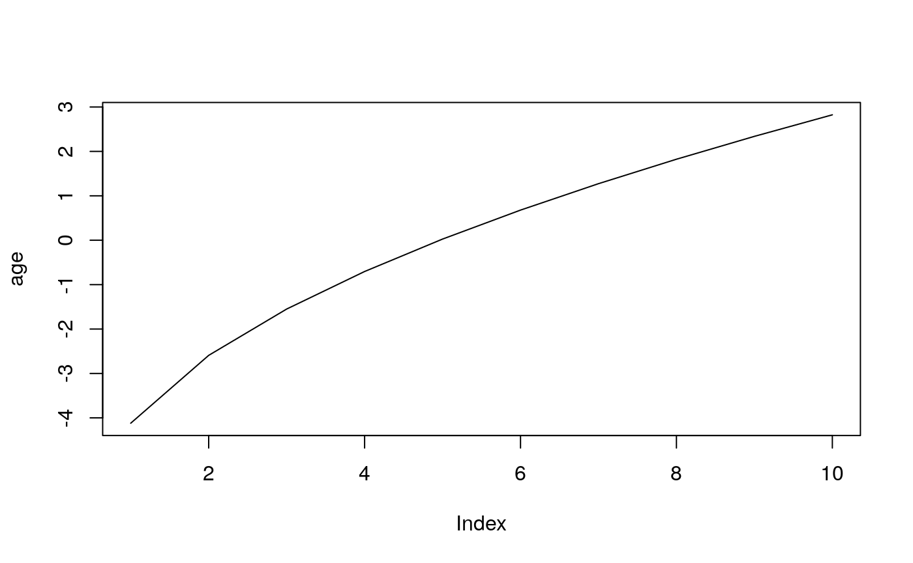
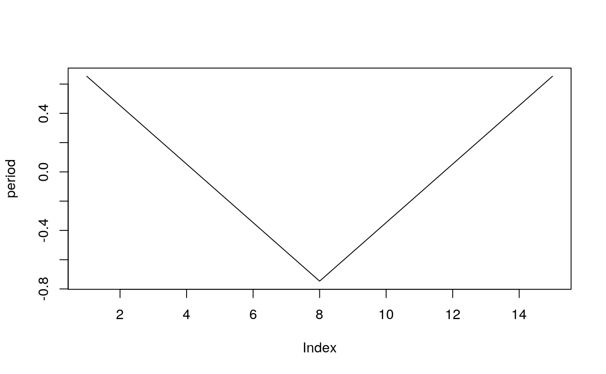
periods_per_agegroup=5
number_of_cohorts <- periods_per_agegroup*(10-1)+15
cohort<-rep(0,60)
cohort[1:15]<-(14:0)
cohort[16:30]<- (1:15)/2
cohort[31:60]<- 8
cohort<-cohort/10
cohort<-cohort-mean(cohort)
plot(cohort, type="l")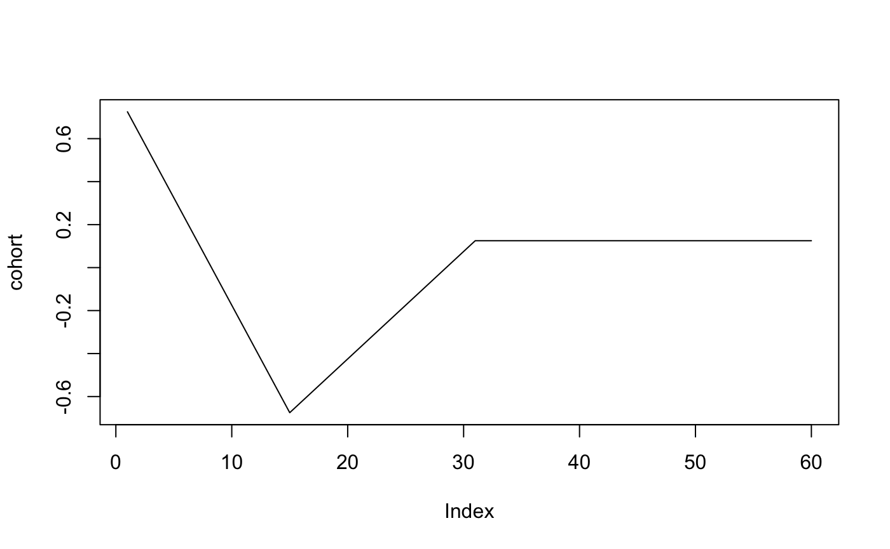
## [,1] [,2] [,3] [,4] [,5] [,6] [,7] [,8] [,9] [,10]
## [1,] 4 8 27 47 69 112 172 410 1120 3063
## [2,] 1 7 15 32 62 95 156 289 839 2239
## [3,] 2 1 13 34 62 108 107 256 599 1730
## [4,] 1 2 9 24 43 67 98 166 501 1150
## [5,] 0 3 11 29 42 77 93 126 332 937
## [6,] 2 2 9 15 43 77 77 88 249 666
## [7,] 0 3 8 14 32 46 75 106 200 529
## [8,] 1 0 3 10 27 46 63 87 141 342
## [9,] 0 6 10 13 29 49 70 101 148 416
## [10,] 0 1 11 19 38 63 122 116 145 451
## [11,] 0 4 9 25 48 92 114 162 247 550
## [12,] 1 8 17 26 51 94 147 221 280 492
## [13,] 2 8 18 35 72 161 208 268 383 612
## [14,] 0 7 20 48 83 154 249 337 477 661
## [15,] 1 6 26 45 97 194 364 483 590 753simmod <- bamp(cases = simdata$cases, population = simdata$population, age = "rw1",
period = "rw1", cohort = "rw1", periods_per_agegroup =periods_per_agegroup)##
## Model:
## age (rw1) - period (rw1) - cohort (rw1) model
## Deviance: 147.08
## pD: 50.51
## DIC: 197.59
##
##
## Hyper parameters: 5% 50% 95%
## age 0.607 1.436 2.917
## period 12.785 24.687 44.016
## cohort 66.611 106.102 163.995## Warning: MCMC chains did not converge!## [1] FALSE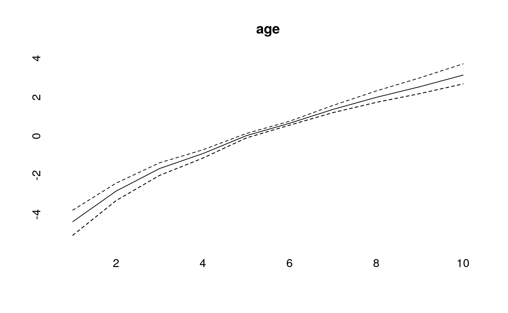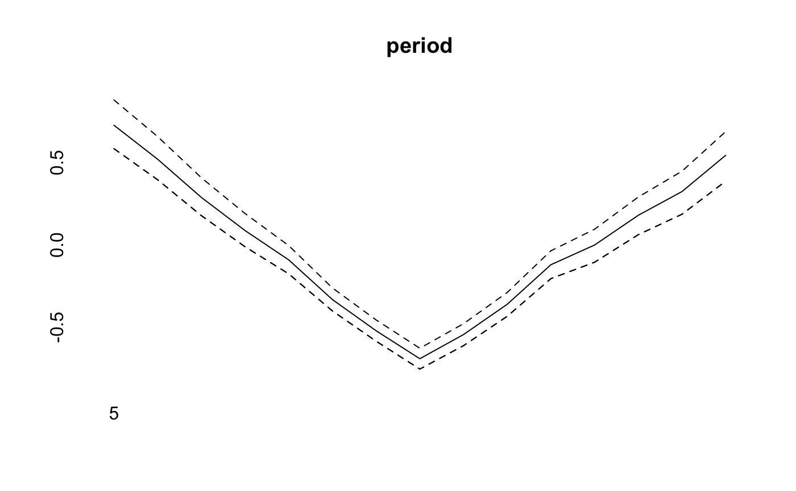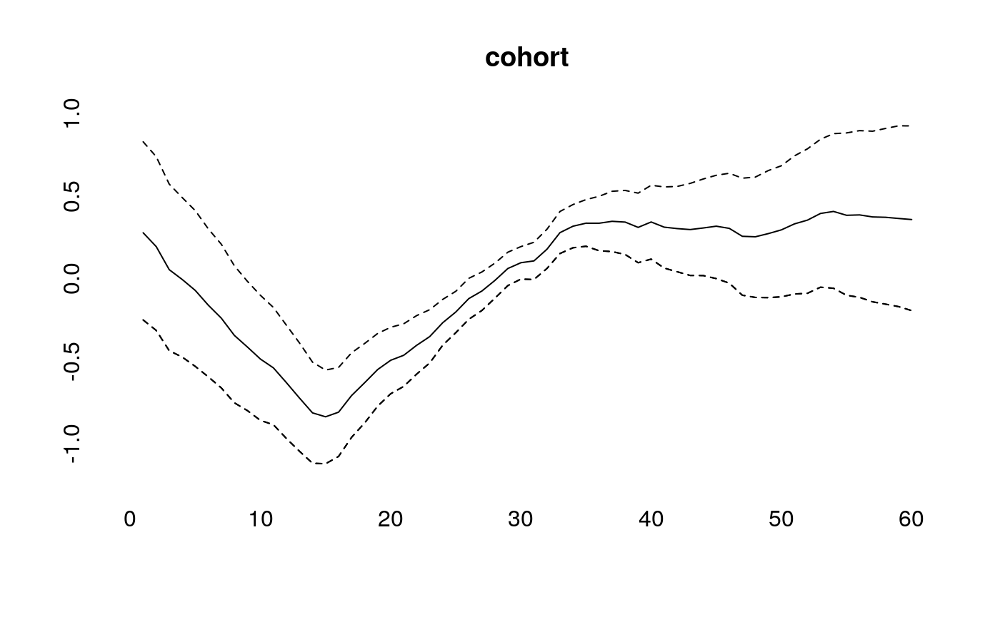
effects<-effects(simmod)
effects2<-effects(simmod, mean=TRUE)
#par(mfrow=c(3,1))
plot(age, type="l")
lines(effects$age, col="blue")
lines(effects2$age, col="green")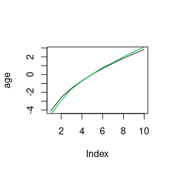
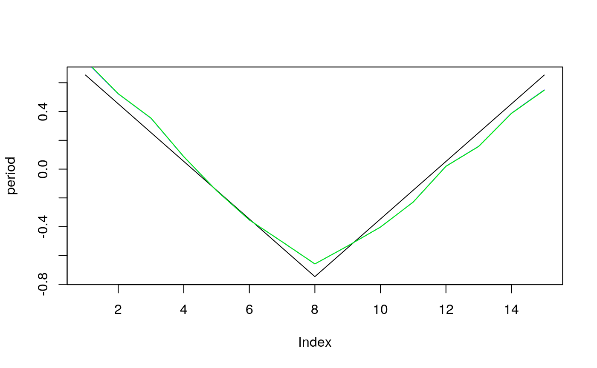
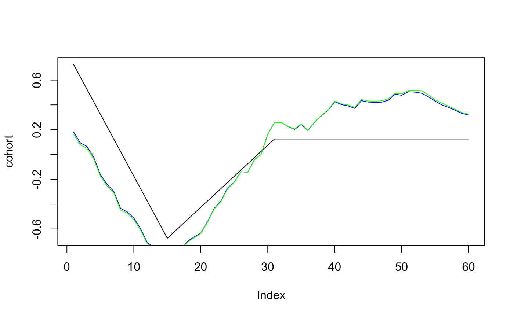
plot(prediction$cases_period[2,], ylim=range(prediction$cases_period),ylab="",pch=19)
points(prediction$cases_period[1,],pch="–",cex=2)
points(prediction$cases_period[3,],pch="–",cex=2)
for (i in 1:20)lines(rep(i,3),prediction$cases_period[,i])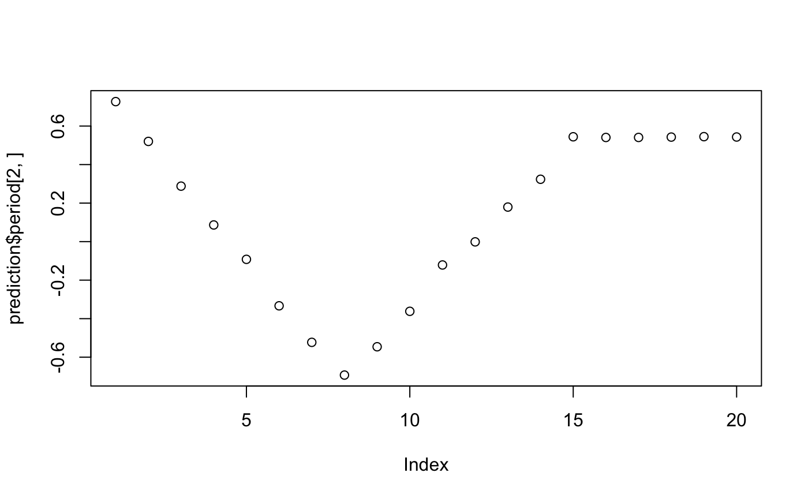
simmodrw2 <- bamp(cases = simdata$cases, population = simdata$population, age = "rw2",
period = "rw2", cohort = "rw2", periods_per_agegroup =periods_per_agegroup)##
## Model:
## age (rw2) - period (rw2) - cohort (rw2) model
## Deviance: 167.78
## pD: 31.62
## DIC: 199.39
##
##
## Hyper parameters: 5% 50% 95%
## age 34.572 118.142 346.772
## period 30.202 74.562 168.025
## cohort 553.729 1318.573 2798.038## Warning: MCMC chains did not converge!## [1] FALSE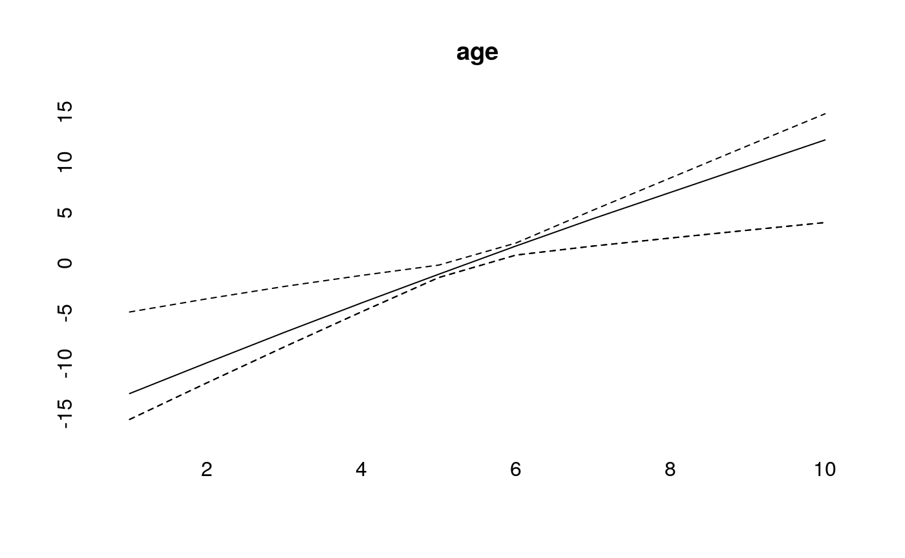 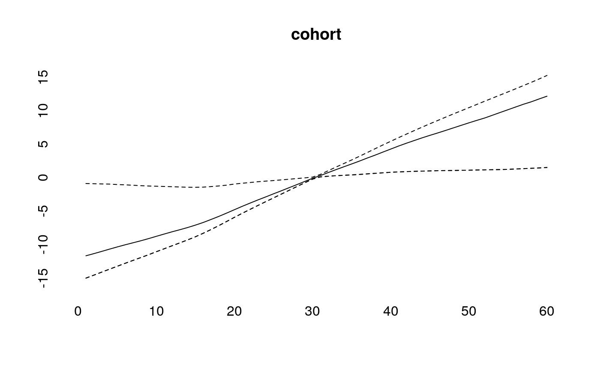
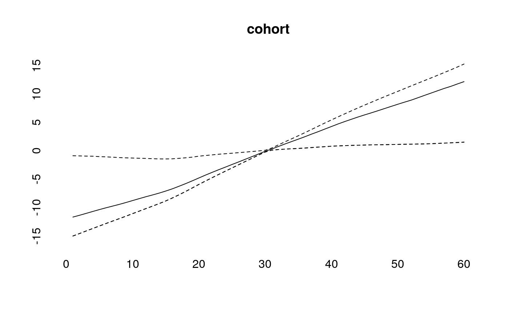